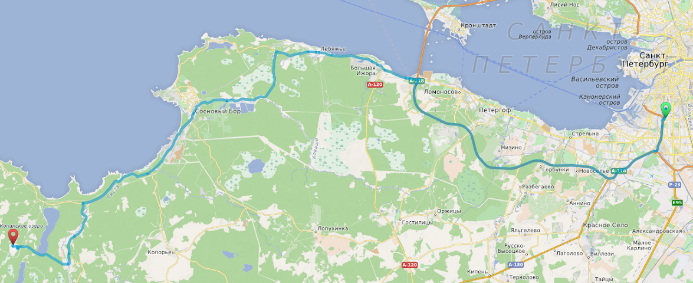
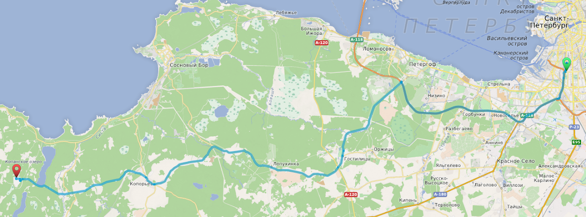
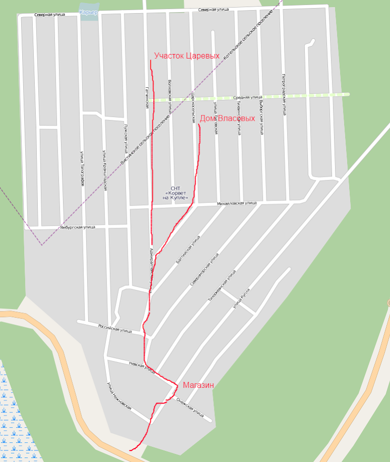
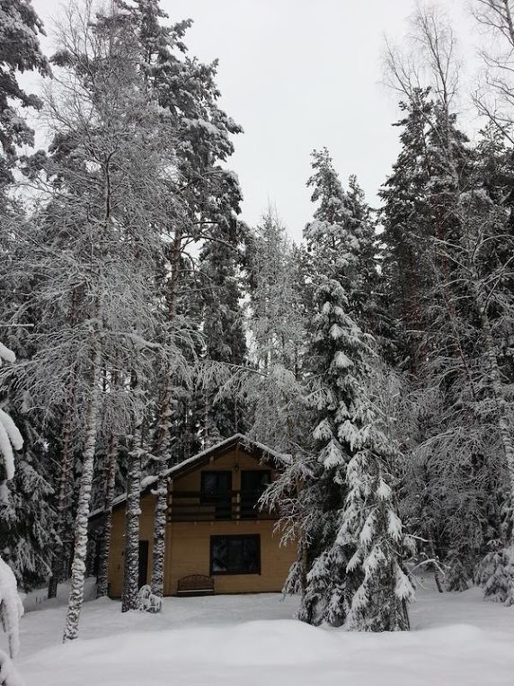

Корвет-на-купле
Место
Садоводство «Корвет-на-Купле», около деревни Пятчино, в Нежновском сельском поселении Кингисеппского района (за Сосновым Бором).
59°42'51.0"N 28°38'08.3"E
59.714180, 28.635630
См. карту:
View Larger Map
Автомобилем через Сосновый Бор — надежный вариант

Преимущества — полностью асфальтовая дорога.
Съезжаем с КАД на развязке в Бронке на Краснофлотское шоссе в сторону Соснового Бора. Езжайте по Краснофлотскому шоссе прямо, через Большую Ижору и Лебяжье. По дороге пост Погранслужбы ФСБ, в теории могут проверять российский паспорт, но останавливают очень редко.
После Лебяжьего через некоторое время поверните налево по указателю на Коваши (если вдруг пропустите поворот — ничего страшного, дорога приведет вас в Сосновый Бор небольшим крюком). Проезжайте сквозь Сосновый Бор, мимо ЛАЭС и фигачьте дальше. Поверните налево по указателю на Нежново и езжайте по дороге до Т-образного перекрестка, на котором поверните направо на Нежново. Езжайте прямо сквозь деревни Нежново и Пятчино по асфальтовой дороге, не сворачивая на грунтовки. После Пятчино справа будет садоводство «Корвет-на-Купле».
Автомобилем через Копорье — приключенческий / быстрый вариант

Преимущества — более короткая и быстрая дорога, нет погранслужбы
Недостаток — грунтовый участок дороги (может быть в плохом состоянии, особенно в дождь). С другой стороны зимой на внедорожнике или летом после недавнего равняния грейдером — самый лучший вариант!
Съезжаем с КАД на Гостилицкое шоссе по указателю «Гостилицы, Копорье». Едем прямо-прямо-прямо вплоть до Копорья. В Копорье едем прямо, проезжаем мимо крепости, сразу после конца Копорья поворачиваем налево на грунтовку. Вскоре будет переезд, и дальше фигачим прямо по грунтовке (аккуратно, т.к. могут быть ямы). После Семейского асфальт вернется, едем все время прямо. Езжайте прямо сквозь деревни Нежново и Пятчино по асфальтовой дороге, не сворачивая на грунтовки. После Пятчино справа будет садоводство «Корвет-на-Купле».
Таллиннское шоссе
Не надо бездумно верить навигатору, и ехать через Талиннское шоссе или что-то в этом роде!
Общественный транспорт до Соснового Бора
Первая наша цель — Сосновый Бор. Туда ходит прямая электричка от города (ж/д станция Калище), если удастся подгадать свое добиралово под электричку, это лучше всего. http://www.tutu.ru/spb/rasp.php?st1=20600&st2=3701
Альтернатива — 401 маршрутка от ст. м. Автово. Идет дольше, комфорт меньше, расписание неизвестно. Из Соснового Бора
Если вы добрались до Соснового Бора, полдела уже сделано. Дальше можно:
- Попросить кого-то вас встретить на машине (это ≈40 минут в одну сторону)
- Поехать на автобусе №677 до Нежнова. (Расписание ХЗ) Автобус проходит через ж/д вокзал и вроде как ко многим электричкам подогнан (хотя не факт). Дальше вам до места всего 12 километров (т.е. — просить встречать или велосипед).
- Такси до места (≈1000 руб). Такси Блюз +7-921-308-20-00, +7-911-965-00-01, +7-905-288-43-01, +7-904-633-10-00 Би-би +7-921-313-59-89, +7-904-645-04-66 Девятка +7-921-315-61-63, +7-921-574-00-34, +7-911-948-53-78, +7-906-242-84-09, +7-905-281-79-07, +7-904-644-23-09, +7-904-645-49-02
Прямое такси
Такси от города ≈2000 рублей.
Внутри садоводства
Используйте навигатор и приведенную выше точку. На карте OSM обозначены проезды внутри садоводства. 

Правила общежития
На даче запрещено курить в доме, на балконе и террасе (можно только у мангала).
Если возникает вопрос, что привозить при приезде в гости: угли, жидкость для розжига, бутилированную воду, бухло, кчайности, мясо на мангал. Спальник нужен только в случае больших пьянок.
В случае больших пьянок: парковка у дома запрещена. Доезжайте, разгружайте и паркуйтесь при въезде в садоводство.